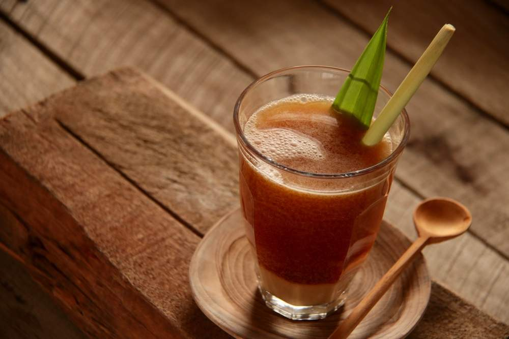

Bandrek (pronounced bun-drag) is a sweet and spicy hot drink native to the Sundanese people of West Java, Indonesia. Sundanese people that inhabit the colder parts of the country drink it to keep themselves warm during cold weather.
Meal prep time : 20 minutes
Servings : 2